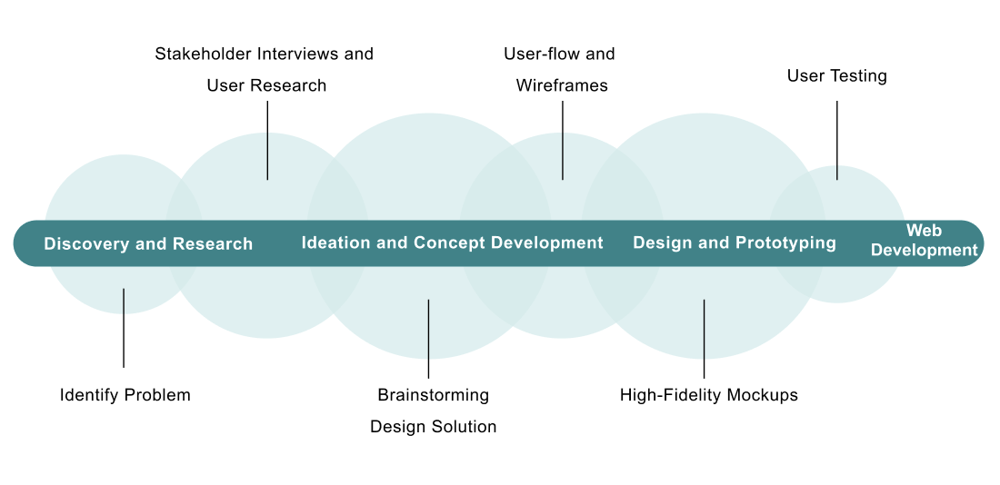

Overview
The purpose of the Recruitment Website Redesign Project
is to create a visually appealing and user-friendly website that effectively communicate the
company's brand and culture, and attract top talent to apply for job opportunities.
I worked on this project as a UX/UI Designer and Front-End Developer. I focused on enhancing the
user experience and streamlining the application process, making it easy for candidates to learn
about the company, search for job openings, and submit their applications.
Design Process
The Problem
The analysis of the old recruitment website revealed several significant issues that impacted its effectiveness and user experience:
User Research
I interviewed with the HR team and other stakeholders to gather requirements and understand pain points. The user research revealed several critical issues with the old recruitment website:
Design solutions
UX Aspect:

UI Aspect:
Desktop Mockup
Mobile Mockup
Development and Launch
After completing the design process, the project moved into the development phase. I built a responsive layout using modern web technologies such as HTML5, CSS3, and JavaScript to turn the finalized designs into a functional, high-performing website. This phase involved close collaboration between back-end developers to ensure the website was not only visually appealing but also technically robust and user-friendly.
Outcome
The redesigned recruitment website resulted in a 40% increase in the number of candidates applying for job openings. This significant improvement was attributed to the new website design, which made it easier for potential candidates to find job opportunities and apply for them. The project successfully delivered a high-performing, visually appealing, and user-friendly recruitment platform that meets the needs of both the company and its potential candidates.
Any question or remarks? Feel free to Email me! 📧
jeanzu19@gmail.com